Systém Elm runtime používá paket elm-lang/virtual-dom pro zobrazení HTML na obrazovku. V této sekci si povíme, jak tato knihovna pracuje. Nejprve pojďme pochopit, jak vůbec prohlížeče HTML zobrazují.
Jak prohlížeče zobrazují HTML
Je-li prohlížeči poskytnut nějaký HTML kód, projde řadou transformací, než se jeho UI elementy zobrazí na obrazovce.

1. Parsování HTML
Pohleďme jak je kód HTML, který jsme viděli v sekci Skladba EA - 1, zpracován.
<html>
<body>
<div>
<button> - </button>
0
<button> + </button>
</div>
</body>
</html>První věc, kterou prohlížeč při setkání s výše uvedeným kódem učiní, je to že vytvoří HTML tokeny. Tokeny jsou stavební bloky jazyka. Ve svém úhrnu reprezentují celý slovník daného jazyka. Prohlížeče používají proces, zvaný tokenizace nebo lexikální analýza k rozdrobení HTML kódu na jednotlivé tokeny. Obrázek dole ukazuje, jak se výše uvedený kód jeví prohlížeči - jako serie textových znaků.

Pro zjednodušení je samozřejmě zobrazena jenom část kódu. Prohlížeč prochází jednotlivými znaky, počínaje prvním.
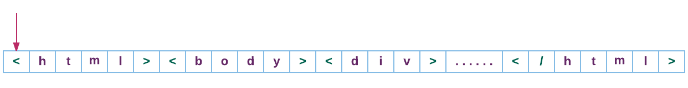
První znak, na který narazí, je <, z čehož plyne, že následuje token počátečního tagu. Prohlížeč pokračuje probíráním dalších znaků až narazí na >, což označuje konec tokenu počátečního tagu.
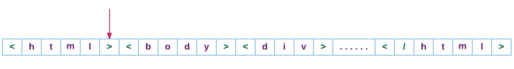
Znaky mezi < a > jsou konvertovány na první počáteční tag, zvaný html.
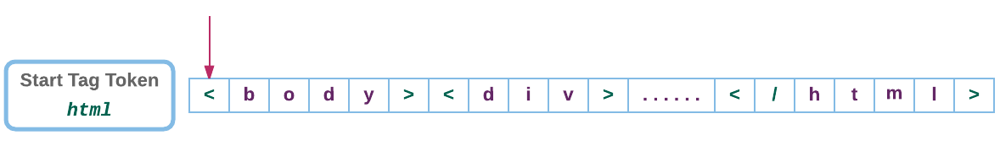
Druhým tokenem je počáteční tag body.
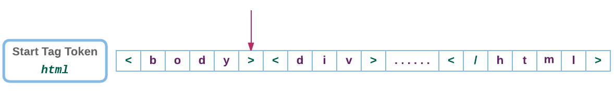
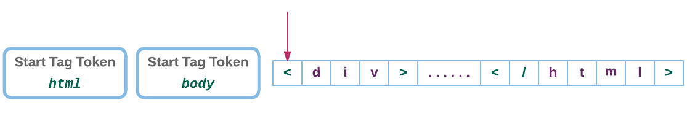
Prohlížeč pokračuje v probírání znaků v našem kódu, konvertujíc je na další tokeny. Obrázek dole ukazuje všechny tokeny z našeho kódu.
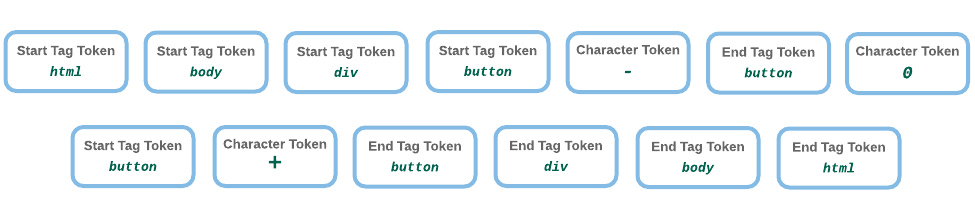
2. Vytvoření stromové struktuyry DOM
V tokenizační fázi vytvořil prohlížeč z textových znaků řadu tokenů. Dalším krokem je použití těchto tokenů k sestavení stromové struktury DOM (Document Object Model).
"Document Object Model (DOM) je programovací rozhraní (API) pro dokumenty HTML a XML. Poskytuje strukturovanou reprezentaci dokumentu a definuje způsob, jímž lze ke struktuře přistoupit z programů, které mohou měnit jeho strukturu, styl a obsah. DOM poskytuje reprezentaci dokumentu jako strukturovanou skupinu nodů a objektů, vybavených vlastnostmi a metodami. V podstatě spojuje webové stránky se skripty či programovacími jazyky" - Mozilla Developer Network
Po načtení stránky HTML v ní často potřebujeme provést změny v závislosti na různých událostech generovaných uživatelem nebo jiným zdrojem. Když například uživatel stiskne tlačítko + v aplikaci "counter", vytvoří prohlížeč stromovou strukturu, zvanou "tree" (strom). Tree je datová struktura, simulující hierarchický vztah mezi objekty.
S přístupem k objektové reprezentaci každého elemnetu stránky HTML můžeme nyní přidávat, měnit a odebírat HTML elementy a atributy, měnit styly CSS, reagovat na existující události nebo vytvářet události nové prostřednictvím JavaScriptu.
Objekty DOM mají tendenci mít téměř jednoznačtou souvztažnost s elementy HTML, jak ukázáno v obrázku dole.
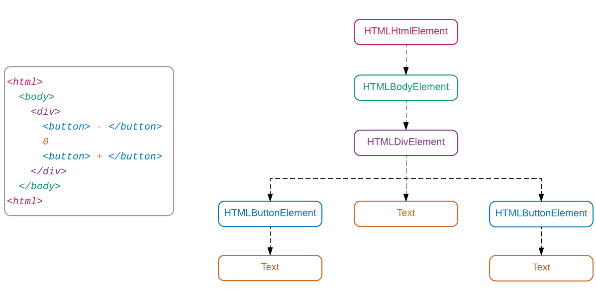
Souvztažnost (mapping) je velice těsná, protože prohlížeč tvoří strom DOM z tokenů, extrahovaných z původního kódu HTML, jako zobrazeno dole.
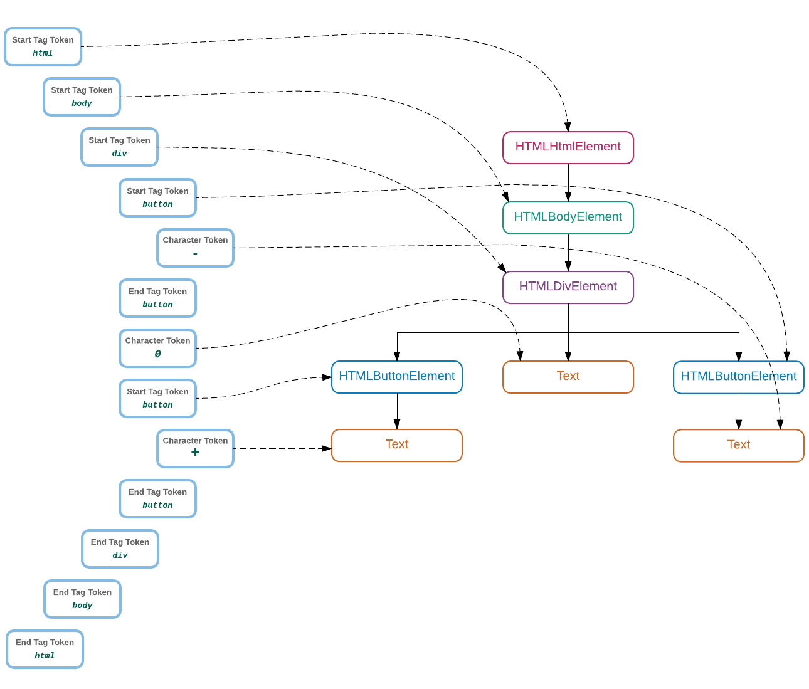
V hantýrce HTML jsou objekty stromu DOM často označovány jako noudy (nodes). Můžeme být konkretní a označovat každý node rozlišným jménem podle typu objektu, který reprezentuje. Například kořenový node ve stromu DOM je známý jako document. Je to specielní typ nodu, který reprezentuje celý dokument HTML a je vytvořen jako první. Po něm následují další nody, vytvořené z následujících tokenů.
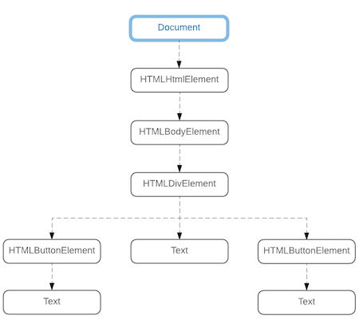
Nody, které mohou být použity k určení tagu HTML, se nazývají elementy. Atributy elementů, jako je id a class mohou být reprezentovány s použitím nodů attribute. Podobně komentáře a prostý text mohou být reprezentovány nody comment a text. Oficiální specifikace DOM obsahuje mnoho dalších typů nodů.
Typ nodu můžeme vlastně získat přímo z konzoly prohlížeče. Otevřete tuto konzolu na stránce http://localhost:8000/elm-examples/Counter.elm a zadejte následující příkaz za promptem.
- Otevření webové konzoly v prohlížeči
- Instrukce pro otevření konzoly v prohlížečí se liší podle typu prohlížeče. Přečtěte si prosím toto pěkné poučení od WickedlySmart o konzolách v různých prohlížečích.
> document.nodeType
9Vlastnost nodeType vrací číslo. Abychom zjistili, který typ nodu našemu číslu odpovídá, musíme konzultovat následující tabulku.
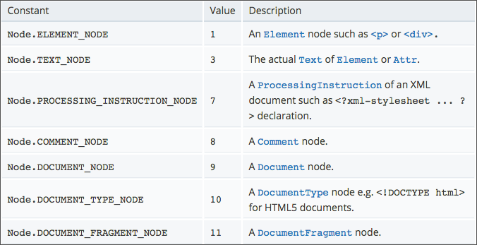
Číslu 9 odpovídá DOCUMENT_NODE. Zjistěme typ nodu několika dalších objektů zápisem příkazů do webové konzoly:
> var div = document.createElement("div")
undefined
> div.nodeType
1 // --> ELEMENT_NODE
> var text = document.createTextNode("some text")
undefined
> text.nodeType
3 // --> TEXT_NODE
> var comment = document.createComment("some comment")
undefined
> comment.nodeType
8 // --> COMMENT_NODEVšimněte si, že můžeme vytvořit elementy HTML použitím JavaScriptových funkcí, jako je createElement, createTextNode a createComment. To je možné díky existenci stromu DOM. Kód HTML, který napíšeme, je přeměněn v něco, s čím můžeme v paměti manipulovat s použitím JavaScriptu.
3. Vytvoření Render Tree
Během vytváření stromu DOM se paralelně tvoří další strom, zvaný render tree. Tento strom obsahuje informace o stylu každého nodu DOM, které určují způsob jeho zobrazení. Nody, které nejsou určeny k zobrazení na obrazovce, nejsou zahrnuty do render tree. Zde je několik neviditelných nodů: head, scripta meta. Některé nody mohou být skryté via CSS použitím sentence display: none. Tyto nody jsou rovněž vyloučeny z render tree.
4. Rozložení nodů
Po dokončení render tree přechází prohlížeč do přípravy pro zobrazení jednotlivých nodů. Render tree obsahuje informace o tom, jak mají být nody zobrazeny, ale ne kde na obrazovce mají být vykresleny. Prohlížeč počítá pozici a velikost každého nodu z informací, uložených v render tree.
5. Malování
Nyní, když jsou všechny informace pro vynesení nodů vyhodnoceny, počíná prohlížeč konvertovat každý node v render tree na skutečné pixely v obrazovce. Tento proces se nazývá painting (malování).
Virtuální knihovna DOM v Elmu se zabývá pouze stromem DOM, nikoliv render tree, avšak poučení o obou vám dává ucelenější obraz toho, jak je stránka HTML vyvedena prohlížečem.
- Further Reading
- What we covered so far is a very high-level overview of how browsers parse and render HTML on a screen. If you’d like to learn more about this topic, here are a few resources:
Virtuální DOM
I když strom DOM nám usnadňuje vytváření, aktualizaci a odebírání nodů, přímá manipulace s tímto stromem je při velkém počtu nodů pomalá. Napišme nějaký kód v JavaScriptu abychom zjistili, jak dlouho trvá aktualizace nodu DOM ve srovnání s jednoduchým řetězcem. Vytvořte nový soubor s názvem dom-performance-test.js v adresáři beginning-elm.
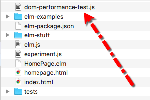
Přidejte následující kód do souboru dom-performance-test.js.
// Create a simple string
var someString = "some string";
// Update string 10,000 times
function updateString() {
for (var i = 0; i <= 10000; i++) {
someString = "updated string"
};
}
// Find out how long it takes to update a string 10,000 times
var t1 = performance.now();
updateString();
var t2 = performance.now();
console.log("It took " + (t2 - t1) + " milliseconds to update a string.");Vytvořili jsme jednoduchý řetězec a napsali funkci, která tento řetězec 10.000 krát aktualizuje. Potom jsme použili funkci performance.now() k odchycení časového okamžiku (timestamp) před a po volání funkce updateString. Nakonec jsme vytiskli délku provádění této funkce do konzoly.
Nyní napíšeme podobný test abychom zjistili, jak dlouho trvá aktualizace nodu DOM. Přidejte následující kód na spodek souboru dom-performance-test.js.
// Create new nodes
var newDiv = document.createElement("div");
var newText = document.createTextNode("some text");
// Add new nodes to the DOM tree
newDiv.appendChild(newText);
document.body.appendChild(newDiv);
// Update the text node inside div 10,000 times
function updateDOM() {
for (var i = 0; i <= 10000; i++) {
newDiv.innerHTML = "updated text";
}
}
// Find out how long it takes to update a DOM element
var t3 = performance.now();
updateDOM();
var t4 = performance.now();
console.log("It took " + (t4 - t3) + " milliseconds to update a DOM element.");Vytvořili jsme nový element div a vložili do něho text. Potom jsme připojili div jako dítě k elementu body. Funkce updateDOM jednoduše aktualizuje obsah HTML uvnitř elementu div 10,000 krát přiřazením nové hodnoty k vlastnosti innerHtml.
Ke spuštění tohoto experimentu potřebujeme načíst soubor dom-performance-test.js uvnitř souboru index.html, umístěného v adresáři beginning-elm.
<!DOCTYPE html>
<html>
.
.
<body>
.
.
<script src="elm.js"></script>
<script src="experiment.js"></script>
<script src="dom-performance-test.js"></script>
.
.
</body>
</html>Otevřte index.html v prohlížeči a poté otevřte konzolu prohlížeče. Měli byste vidět čas aktualizace řetězce a elementu DOM v milisekundách.
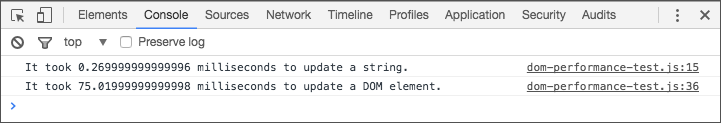
Uvedená čísla jsou z prohlížeče Chrome 56 na platformě MacBook Air s procesorem 1.6 GHz Intel Core i5 a s pamětí 8 GB. Vy můžete vidět jiné výsledky v závislosti na použitém počítači a prohlížeči. Ať už používáte jakoukoliv platformu a prohlížeč, vždy je aktualizace elementu DOM výrazně delší než aktualizace řetězce. Proč tomu tak je?
Aktualizace stringu je přímočará. JavaScript ví, kde je řetězec v paměti uložen, takže jeho aktualizace spočívá v přepsání několika bitů v paměti novou hodnotou. Když ale aktualizujeme node DOM, není to jenom JavaScript, který je do aktualizace zapojen. Prohlížeč musí protáhnout novou změnu celým dříve popsaným procesem:
- parsovat HTML
- aktualizovat strom DOM
- aktualizovat render tree
- rozvrhnout render tree
- namalovat render tree na obrazovku
V závislosti na složitosti změny může prohlížeč potřebovat zničit a znovu vytvořit stávající dětské nody elementu, který se pokoušíme aktualizovat. Může také potřebovat přepočítat fyzické rozměry a styly mnoha nodů, změnou ovlivněných. Jsou-li do akce zapojeny nějaké extenze prohlížeče, které řídí přístup k nodu, který chceme upravit, musí se prohlížeč nejprve ptát na jejich svolení a uvědomit je o provedené změně.
Úplný rozsah důsledků aktualizace nodu DOM může být obrovský. Náš experiment nebyl nijak složitý a přesto aktualizace nodu DOM trvala 288 krát déle než aktualizace řetězce. Můžeme si představit, jak dlouho by trvalo, kdybychom chtěli aktualizovat mnoho nodů najednou.
I když se tomuto problému nemůžeme vyhnout, Elm jej zmenšuje prováděním co možná nejmenšího počtu aktualizací stromu DOM. Elm od nás vlastně přebírá zodpovědnost za aktualizování stromu DOM. Dříve, když jsme napsali tento kód v JavaScriptu:
// Update the text node inside div 10,000 times
function updateDOM() {
for (var i = 0; i <= 10000; i++) {
newDiv.innerHTML = "updated text";
}
}stáli jsme před nepříjemným problémem vlatnoručně aktualizovat DOM. V Elmu nám stačí pouze určit, jak chceme náš model prezentovat uživateli. V sekci Skladba EA - 1 jsme napsali následujcí kód pro zobrazení naší sestavy "view".
view : Model -> Html Msg
view model =
div []
[ button [ onClick Decrement ] [ text "-" ]
, text (toString model)
, button [ onClick Increment ] [ text "+" ]
]Nemuseli jsme určovat, které nody DOM by měly být aktualizovány. Vše, co jsme udělali bylo to, že jsme určili, jak by mělo naše zobrazení (view) vypadat a to použitím jednoduchých funkcí Elmu. Elm za scénou použil paket elm-lang/virtual-dom ke konvertování kódu ve funkci view na aktuální nody DOM.
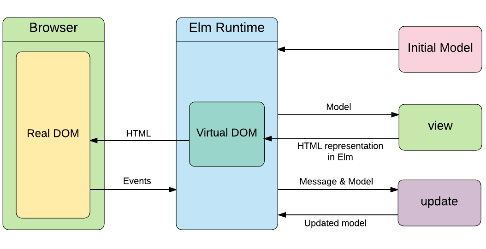
Ponořme se hlouběji do paketu elm-lang/virtual-dom abychom pochopili, jak pracuje. Většina funkcí, definovaných v modulu Html jsou zábaly virtuálních nodů DOM. Pohleďte, jak je uvedena funkce div v modulu Html.
div : List (Attribute msg) -> List (Html msg) -> Html msg
div =
node "div"Vše co dělá je to, že posílá název tagu další funkci zvané node, rovněž definované v modulu Html.
node : String -> List (Attribute msg) -> List (Html msg) -> Html msg
node =
VirtualDom.nodeFunkce node poskytuje obecný způsob vytváření tagů HTML. Většina pomocných funkcí v modulu Html, jako div, button a label jsou definovány s pomocí funkce node.
button : List (Attribute msg) -> List (Html msg) -> Html msg
button =
node "button"label : List (Attribute msg) -> List (Html msg) -> Html msg
label =
node "label"Modul Html poskytuje impresivní seznam pomocných funkcí pro vytváření téměř všech v dnešní době používaných tagů. Pokud však potřebujeme vytvořit nějaký tag, který oněmi funkcemi vytvořit nejde, můžeme použit funkci node třeba takto:
someTag : List (Attribute Msg) -> List (Html msg) -> Html msg
someTag attributes children =
node "sometag" attributes childrenPodíváme-li se na uvedení funkce node, vidíme že to je jednoduchý obal nodu DOM.
node : String -> List (Attribute msg) -> List (Html msg) -> Html msg
node =
VirtualDom.nodeKdybychom chtěli, mohli jsme v naší funkci view použít VirtualDom.node přímo. Vyzkoušejme to. Upravte funkci view v souboru Counter.elm jak ukázáno dole a také importujte modul VirtualDom.
module Counter exposing (..)
import VirtualDom
import Html.Events exposing (..)
import Html exposing (..)
.
.
view : Model -> Html Msg
view model =
VirtualDom.node "div"
[]
[ button [ onClick Decrement ] [ text "-" ]
, text (toString model)
, button [ onClick Increment ] [ text "+" ]
]Spusťte elm-reactor v terminálu z adresáře beginning-elm a přejděte na tuto stránku v prohlížeči: http://localhost:8000/elm-examples/Counter.elm. Měl byste vidět následující chybu.
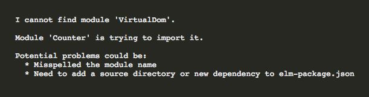
Elm si stěžuje, že nemůže nalézt modul VirtualDom, i když paket do kterého patří, je již instalován.
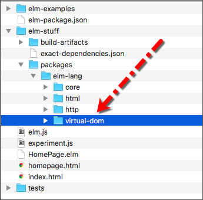
Když jsme instalovali paket elm-lang/html v odstavci Vytvoření jednoduché stránky sekce "Začínáme", byl paket elm-lang/virtual-dom rovněž instalován, protože to je jeden z paketů, na nichž je elm-lang/html závislý.
Elm nám nyní vrátil chybové hlášení, protože v našem kódu nemáme přístup k modulu, ledaže je příslušný paket výslovně uveden v souboru beginning-elm/elm-package.json. Což aktuálně není.
{
.
.
"dependencies": {
"elm-lang/core": "5.0.0 <= v < 6.0.0",
"elm-lang/html": "2.0.0 <= v < 3.0.0",
"elm-lang/http": "1.0.0 <= v < 2.0.0"
},
.
.
}Můžeme buď přímo přidat elm-lang/virtual-dom do souboru elm-package.json nebo nechat to za nás udělat aplikaci elm-package. Zkusme druhý přístup. Z adresáře beginning-elm zadejte v terminálu následující příkaz.
elm-package install elm-lang/virtual-domOdpovězte y, byvše tázáni zda přidat elm-lang/virtual-dom jako dependenci do souboru elm-package.json a odsouhlaste plán instalace. Když nyní obnovíte stránku http://localhost:8000/elm-examples/Counter.elm, uvidíte další chybu.
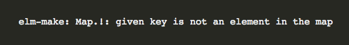
Obvykle umí Elm velmi přesně sdělit příčinu chyby. V tomto případě nám chybové hlášení nic určitého neříká. Protože jsme chtěli aby Elm instaloval paket, který byl již přítomný, byl elm-reactor zmaten. Pokračujte a smažte adresář build-artifacts, umístěný v adresáři beginning-elm/elm-stuff. To přinutí elm-reactor rekompilovat celý projekt a vyhnout se nejasnostem. Když nyní opět obnovíte stránku http://localhost:8000/elm-examples/Counter.elm měl byste vidět naše pěkné zobrazení (view).
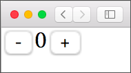
Pohleďme, jak je funkce VirtualDom.node implementována:
node : String -> List (Property msg) -> List (Node msg) -> Node msg
node =
Native.VirtualDom.nodeJak se ukazuje, je to rovněž obal pro další funkci node, definovanou v modulu Native.VirtualDom. Prefix Native indikuje, že tento modul není napsán v Elmu. Nativní moduly jsou obvykle psány v JavaScriptu ale mohou být rovněž psány v nějakém jiném jazyce (e.g., CoffeeScript), který je posléze kompilován do JavaScriptu.
Mnohé moduly Elmu jsou za scénou částečně implementovány v JavaScriptu. Například, funkceList.foldr, se kterou jsme se setkali v sekci Redukce seznamu, je implementována takto:
foldr : (a -> b -> b) -> b -> List a -> b
foldr =
Native.List.foldrFunkceNative.List.foldr je naproti tomu implementována v JavaScriptu takto:
function foldr(f, b, xs)
{
var arr = toArray(xs);
var acc = b;
for (var i = arr.length; i--; )
{
acc = A2(f, arr[i], acc);
}
return acc;
}Podobně funkce String.filter, o které jsme hovořili v sekci Filtrování řetězce také za scénou používá nativní modul.
filter : (Char -> Bool) -> String -> String
filter =
Native.String.filterFunkce Native.String.filter je naproti tomu implementována v JavaScriptu takto:
function filter(pred, str)
{
return str.split('').map(_elm_lang$core$Native_Utils.chr).filter(pred).join('');
}V současné době je 24.2% celého paketu elm-lang/core, což zahrnuje i standardní moduly jako List a String, implementováno v JavaScriptu.
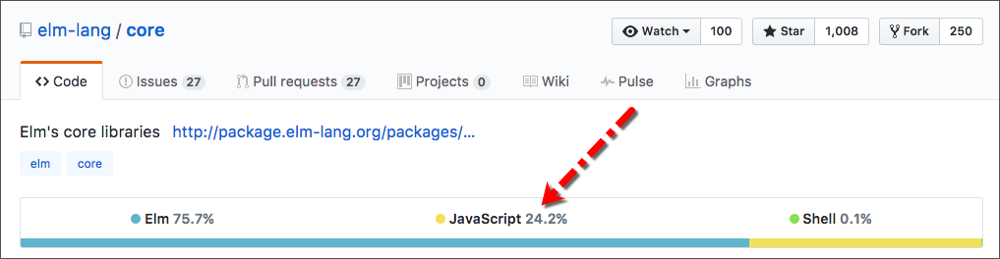
Podobně je 39.5% paketu elm-lang/virtual-dom implementováno v JavaScriptu.
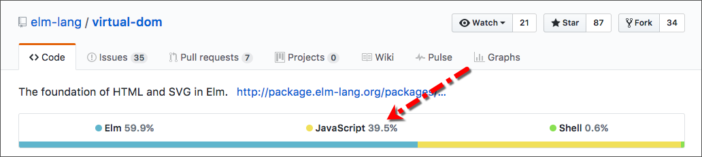
Nyní, když víme co jsou nativní moduly, vraťme se zpět k modulu Native.VirtualDom. Funkce node v tomto modulu je implementována takto v JavaScriptu:
function node(tag)
{
return F2(function(factList, kidList) {
return nodeHelp(tag, factList, kidList);
});
}Používá funkci zvanou nodeHelp k vytvoření nodů DOM. Funkce nodeHelp naproti tomu používá funkci zvanou organizeFacts. Prolézat celou králičí norou, abychom pochopili, jak každá z těchto funkcí pracuje, je mimo rámec této knihy. Modul Native.VirtualDom obsahuje docela složitý kód, jemuž nejsme schopni rozumět bez rozsáhlé znalosti JavaScriptu a interních souvislostí virtuálního DOM. Spokojíme se se zjednodušeným přehledem toho, jak Native.VirtualDom pracuje. Následující algoritmus zhruba vystihuje proces, použitý tímto modulem .
Krok 1: Vytvořit virtuální strom DOM, což není přesná replika skutečného stromu DOM, nýbrž jenom odlehčená verze, vytvořená s použitím objektů JavaScriptu.
Krok 2: Provést změnu UI v naší aplikaci. Touto změnou může být cokoli, například změna barvy tlačítka nebo přidání úplně nového elementu UI nebo odebrání stávajícího.
Krok 3: Vytvořit nový virtuální strom DOM, který reflektuje námi provedené změny UI. Tento strom se liší od stromu z kroku 1..
Krok 4: Přesně určit rozdíly mezi novým a předchozím virtuálním stromem. V tomto punktu virtuální DOM skutečně září. Kdybychom měli určovat rozdíly mezi novým a předchozím UI s použitím reálného DOM, spotřebovali bychom na to mnoho zdrojů. Virtuální DOM je naproti tomu velmi optimalizován pro takovéto operace.
Krok 5: Opakovat kroky 2 až 4, dokud nejsou identifikovány všechny změny UI..
Krok 6: Vytvořit instrukce pro úpravu reálného stromu DOM v jedné velké dávce. Jak již zmíněno, i zdánlivě malá změna reálného DOM je náročná z hlediska výkonu. Je tedy uvážlivé spojovat více instrukcí dohromady než aplikovat každou změnu individuálně.
Krok 7: Upravit reálný DOM s použitím funkce requestAnimationFrame, která určí nejlepší způsob aplikace vícerých změn tak, aby byl přechod z předchozího UI do nového co nejhladší.
I když jsme se v této sekci zavrtávali hluboko do paketu elm-lang/virtual-dom, dobrá zpráva je ta, že ve skutečnosti nemusíme vůbec rozumět jak pracuje, abychom byli schopni vytvářet velké aplikace v Elmu. Modul Html odklání všechny nečisté detaily a umožňuje nám používat jednoduché funkce jako div, button a label, které se vztahují přímo k tagům HTML.
- A Brief History of Virtual DOM
- The concept of virtual DOM was popularized by React — a JavaScript library for building user interfaces — back in 2013. At the time, the virtual DOM implementation was buried deep into React, so other languages and frameworks couldn’t take advantage of this great concept.
-
Jake Verbaten realized that it’s possible to implement a virtual DOM on its own as a set of independent modules and wrote a nice article that laid out what that implementation would look like. In early 2014, Matt Esch started working on creating a standalone virtual DOM library.
-
Soon after the standalone virtual DOM library was available, Evan Czaplicki — the creator of Elm — used it as an underlying implementation for the
Native.VirtualDommodule. In May of 2016, a new version (0.17) of Elm was released and Evan had to rewrite the entire virtual DOM implementation from scratch to support the API changes made in 0.17. The new implementation is much faster than the versions used before 0.17.
Výhody používání virtuálního DOM
Z toho, co jsme dosud poznali, vyplývá, že důvodem pro existenci virtuálního DOM je eliminace úzkých profilů ve výkonu, způsobených častou manipulací se stromem DOM. Existuje ještě další přínos, který je v dnešní době více relevantní a to ten, že můžeme psát modulární kód pro "view" s použitím čistých funkcí. Zbytek této sekce je věnován prozkoumání těchto přínosů.
Psaní modulárního kódu "view"
Pohleďme ještě jednou na funkci view, kterou jsme napsali dříve.
view : Model -> Html Msg
view model =
div []
[ button [ onClick Decrement ] [ text "-" ]
, text (toString model)
, button [ onClick Increment ] [ text "+" ]
]Pěkné na této funkci je to, že vždy vrátí presně tentýž HTML pro tentýž vstup. To znamená, že můžeme spolehlivě ověřit jednoduchými testy, že se funkce view
chová dle očekávání. Můžeme ji také rozdělit do několika stejně spolehlivých funkcí, začíná-li být více složitá. Představme si aplikaci, jejíž domovská stránka vypadá takto:
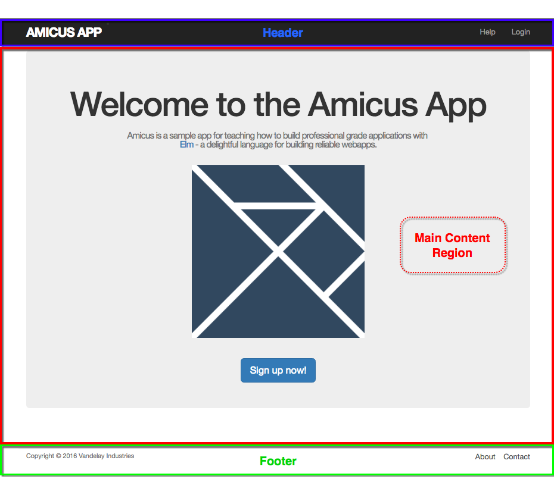
Domovská stránka je rozdělena do tří odlišných oblastí: navigační záhlaví, hlavní oblast a zápatí. Kód "view" pro tuto stránku bude zajisté mnohem složitější, než výše uvedená funkce view, ale můžeme jej rozdělit do několika méně zdrcujících funkcí. Takto nějak by mohla hypothetická funkce view pro domovskou stránku vypadat:
view : Model -> Html Msg
view model =
div []
[ nav model
, mainContent model
, footer model
]
nav : Model -> Html Msg
nav model =
header [ class "navbar navbar-fixed-top navbar-inverse" ]
[ div [ class "container" ]
[ div [ class "navbar-header" ]
[ button
[ class "navbar-toggle"
, attribute "data-target" "#myNavBar"
, attribute "data-toggle" "collapse"
]
[ span [ class "icon-bar" ] []
, span [ class "icon-bar" ] []
, span [ class "icon-bar" ] []
]
, li []
[ a [ href "#home", id "logo" ]
[ text "amicus app" ]
]
]
, Html.nav [ class "collapse navbar-collapse", id "myNavBar" ]
[ ul [ class "nav navbar-nav navbar-right" ]
[ li []
[ a [ href "#help" ]
[ text "Help" ]
]
, li []
[ a [ href "#login" ]
[ text "Login" ]
]
]
]
]
]
mainContent : Model -> Html Msg
mainContent model =
case model.route of
HomeRoute ->
StaticPages.HomeView.view ()
AboutRoute ->
StaticPages.AboutView.view ()
ContactRoute ->
StaticPages.ContactView.view ()
HelpRoute ->
StaticPages.HelpView.view ()
SignupRoute ->
App.map SignupMsg (Signup.View.view model.currentUser)
ProfileRoute ->
App.map ProfileMsg (Profile.View.view model.currentUser)
LoginRoute ->
App.map LoginMsg (Login.View.view model.currentUser)
NotFoundRoute ->
notFoundView
notFoundView : Html Msg
notFoundView =
div [] [ text "Not found" ]
footer : Model -> Html Msg
footer model =
Html.footer [ class "container" ]
[ small [] [ text "Copyright © 2016 Vandelay Industries" ]
, Html.nav []
[ ul []
[ li []
[ a [ href "#about" ]
[ text "About" ]
]
, li []
[ a [ href "#contact" ]
[ text "Contact" ]
]
]
]
]Nesnažte se rozumět, jak každá funkce ve výše uvedeném kódu pracuje. Soustřeďte se na jeho celkovou strukturu. Místo aby sama produkovala celý HTML, deleguje funkce view tento úkol na funkce nav, mainContent a footer, jež jsou zodpovědné za vytvoření HTML pro každou jednotlivou sekci stránky. Tímto rozdělením kódu jsme výrazně redukovali "poznávací přetížení". Můžeme se soustředit na určitou část stránky vyhledáním příslušné funkce a pokusit se porozumět této dílčí funkci. Toto je jeden z důvodů, proč je Elm tak fantastický nástroj pro vytváření vysoce interaktivních webových aplikací které mohou v čase zvětšovat svůj objem a složitost.
Ve většině jazyků a frameworků není taková přímočará možnost psát modulární funkce "view" jako v Elmu. Je to nejenom proto, že tyto jazyky postrádají inherentní podporu pro čisté funkce ale také proto, že jejich kód "view" často potřebuje pracovat přímo s reálným DOM.
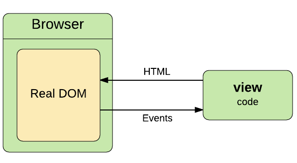
Zatímco v Elmu je kód "view" izolován od reálného DOM jeho runtimem.
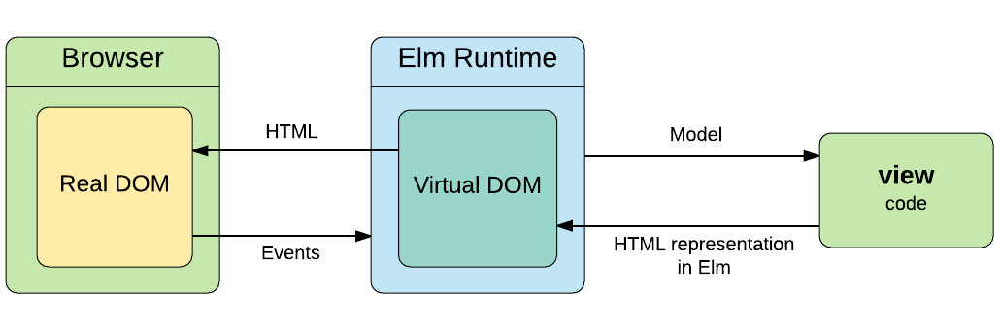
Výkonostní benefity
I když runtime Elmu odstíní špinavé detaily manipulace s realným DOM, má velkou volnost pro provádění chytrých optimalizací za scénou, jež ústí v mnohem rychlejším zobrazováním stránek. Jak přesně umí Elm zobrazovat stránky? Dole uvedený graf ukazuje, jak si Elm vede ve srovnání s několika nejpopulárnějšími v současné době používanými front-end frameworky.
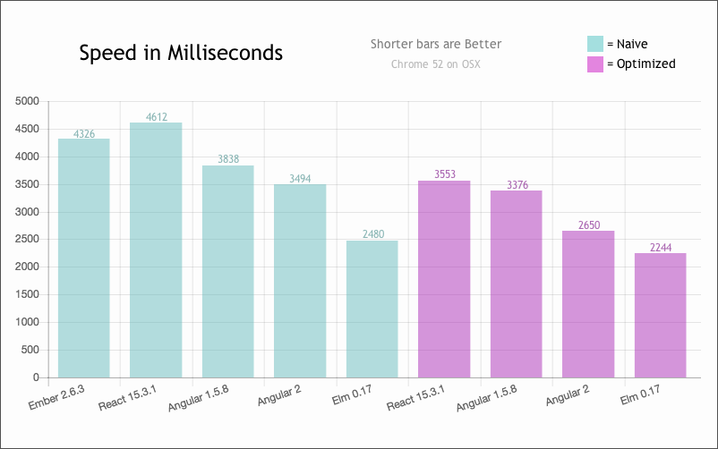
Graf ukazuje, že je Elm extrémně rychlý, co se týče zobrazování stránek. Pokud byste se chtěli dozvědět, jaké optimalizace Elm používá pro dosažení takového velkého výkonu, určitě si přečtěte tento úžasný příspěvek od Evana Czaplického.
Shrnutí
V této sekci jsme poznali, jak moderní prohlížeče zpracovávají HTML parsováním proudu znaků na tokeny, ze kterých vytvoří strom DOM. Tento strom (tree) je poté konvertován na render tree, jenž prochází procesem rozmisťování (layout) předtím, než je vykreslen na obrazovku.
Také jsme zjistili, že manipulace se stromem DOM je docela pomalá. To vedlo k vývoji virtuálního DOM, který umožnil runtime Elmu výrazně urychlit proces renderování. Virtuální DOM nám také umožnil psát modulární kód pro "view" s použitím čistých funkcí, které se dobře testují a v delším časovém horizontu udržují.